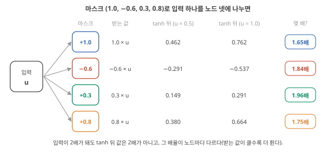

Day 18. 노드를 늘리는 법과 device 비선형의 쓸모
Phase 2 · RC는 왜, 어떻게 작동하는가
이번 질문 마스크와 time multiplexing으로 노드를 늘리면 무엇이 생기고, device의 I–V 비선형은 언제 쓸모 있나?
왜 배우나 τ에서 칸 길이 θ ≈ τ/4를 고르고 비선형이 읽기 I–V인지 이완인지 가린다.
오늘의 장면 입력 u × 마스크 m_j → 칸 j마다 device에 인가 → 칸 끝 전류 = virtual node → 상태 벡터
오늘 반드시 device 하나도 mask와 time multiplexing으로 노드 N개를 만든다. I–V 휨 ≠ 계산용 비선형이고 superposition test로 가린다.
나중에 봐도 됨 tanh 3-parity 설명 · device 24개 × virtual node 5개 회로 · 일곱 방법 비교 숫자
넘어가는 기준 '오늘 반드시'를 내 말로 말할 수 있으면 충분합니다.
이후 쓰이는 곳 Day 23–24 virtual node·시간척도 · Day 25–26 전기적 vs 계산 비선형 · Day 29–30 중첩 시험 · Day 37–38 이온 다이오드
지난 학습 복습
지난 학습 단위(Day 17 · 선형으로 못 푸는 계산: XOR과 선형 분리)의 핵심을 다른 예로 확인합니다. 고르는 즉시 맞았는지와 이유가 보입니다. 틀려도 아래 학습자료는 그대로 열려 있고, 틀린 문제에는 다시 볼 곳이 붙습니다.
학습자료
4. Input mask와 time multiplexing: 노드를 늘리는 두 방법
상황. device는 하나뿐인데 논문은 "virtual node 50개"라고 씁니다. Device 하나가 어떻게 여러 노드가 될까요?
왜 지금? 노드가 여럿 필요하다는 결론을 얻었지만 device를 여러 개 만들기는 어렵습니다. 하나로 여럿을 만드는 방법을 봅니다.
어디에 쓰이나? 내 device의 \(\tau\)를 재서 칸 길이 \(\theta\)(약 \(\tau/4\))와 virtual node 수를 정할 때 씁니다.
끝나면 할 수 있는 것. input mask가 "입력 하나에 노드마다 다른 무게를 곱해 퍼뜨리는 것"(ESN의 \(W_{in}\)과 같음)임을 말하고, device 하나에 입력 하나를 θ 칸으로 나눠 걸고 칸 끝마다 읽는 시간선을 그려 마스크 (1, −1, 1, 1)의 virtual node 네 개 값을 손으로 계산하며, 시간 간격 θ와 device 시간상수 τ의 관계(θ ≈ τ/4)가 왜 중요한지 숫자로 설명할 수 있다.
조금 전 결론은 "서로 다른 비선형 조합이 여럿 필요하다"였습니다. 그런데 이온 device 하나는 전극 두 개에 전류 하나를 냅니다. 숫자 하나입니다. 입력도 대개 숫자 하나(센서 값)입니다. 숫자 하나에서 어떻게 서로 다른 상태 수십 개를 만드나? 두 가지 방법이 있고, 둘 다 마스크에서 시작합니다.
Input mask: 입력 하나를 여러 무게로 퍼뜨리기
왜 필요한가. 입력 \(u(t)\) 하나를 노드 \(N\)개에 똑같이 넣고 노드들의 성질도 같다면, 노드 \(N\)개는 같은 값을 냅니다. Day 13–14의 "거의 같은 노드"가 \(N\)개인 셈이고, 노드 하나와 다를 바 없습니다. 노드마다 입력을 다른 무게로 받아야 서로 다른 상태가 생깁니다.
무엇인가. 노드 \(i\)에 들어가는 입력을 \(m_i \times u(t)\)로 정하는 숫자 목록 \((m_1, m_2, \dots, m_N)\)을 마스크(mask)라고 부릅니다. 보통 난수로 한 번 정하고 고정합니다(+1과 −1을 무작위로, 또는 −1~1의 난수). 사실 이것은 Day 13–14의 \(W_{in}\)(입력 하나를 노드마다 다른 무게로 나눠 주는 목록, State update식 x(t+1) = f(W x(t) + W_{in} u(t))를 숫자로)과 같은 것입니다. 이름이 따로 있는 이유는 아래 time multiplexing에서 나옵니다.
작은 숫자로. 입력 \(u = 0.5\), 마스크 \((1.0, -0.6, 0.3, 0.8)\)이면 노드 넷은 각각 0.5, −0.3, 0.15, 0.4를 받습니다. 각 노드가 \(\tanh\)로 굽히면 0.462, −0.291, 0.149, 0.380. 입력이 1.0으로 두 배가 되면 받는 값도 두 배(1.0, −0.6, 0.3, 0.8)지만 \(\tanh\) 뒤의 값은 0.762, −0.537, 0.291, 0.664로 두 배가 아닙니다. 받는 값이 큰 노드(0.762 < 2 × 0.462)일수록 더 많이 휘어서, 노드마다 휘는 정도가 다릅니다. 같은 입력에서 서로 다른 비선형 조합이 생기는 첫걸음입니다. 그림 6이 이 숫자들을 한 장에 놓습니다.

어디서 깨지나. 마스크 값이 +1과 −1뿐이고 노드가 대칭(\(\tanh(-z) = -\tanh(z)\))이며 치우침(bias: 노드마다 입력에 더해 두는 고정된 작은 상수로, 노드가 휘는 지점을 옮겨 좌우 대칭을 깨는 것)이 없으면, −1을 받은 노드는 +1을 받은 노드의 정확히 부호만 바뀐 복사본이 됩니다. 두 노드는 서로의 가중합(−1배)이라 정보가 늘지 않습니다(가중합은 새 정보가 아님). 그래서 마스크만으로는 부족하고, 노드의 치우침·시간 응답·서로의 연결이 다양함을 더해야 합니다(아래 time multiplexing).
Time multiplexing과 virtual node: device 하나를 시간으로 나눠 여러 노드처럼 쓰기
왜 필요한가. device를 수십 개 만들어 연결하는 것은 어렵습니다. 특히 젤·고분자 이온 device는 배열로 집적하기가 실리콘보다 어렵다고 보는 것이 출발점입니다(Day 49–50). 해석 device가 하나뿐이어도 노드 여럿의 효과를 내는 방법이 있다면 매력적입니다.
무엇인가. 입력 한 단계의 시간(예: 1 ms)을 \(N\)개의 짧은 칸(각 θ = 1/\(N\) ms)으로 나눕니다. 칸 \(j\) 동안 device에 \(m_j \times u(t)\)를 넣습니다(마스크를 시간 순서로 적용). 그리고 각 칸이 끝날 때 device의 출력을 읽습니다. 그러면 입력 한 단계마다 숫자 \(N\)개가 나오고, 이 \(N\)개를 노드 \(N\)개의 상태처럼 취급합니다. 이것을 time multiplexing, 그 \(N\)개를 virtual node라고 부릅니다.
생김새: device 하나와 시간선(그림 7). (a) 블록도는 부품의 연결입니다. 지금은 왼쪽에서 오른쪽으로 실선 화살표만 따라가세요(입력 → 붙잡아 두기 → 마스크 곱하기 → device → 칸 끝마다 읽기). 점선 고리는 지연선(delay line), 곧 읽은 값을 정해진 시간만큼 늦춰 입력 쪽으로 되돌려 보내는 경로로, 과거 상태를 다시 넣어 주는 장치입니다. 자세한 것은 단계 5에서 봅니다. (b) 시간선은 세 줄이 같은 가로축(시간)을 씁니다. 칸 1–4가 입력 한 단계이고, ①은 붙잡아 둔 입력, ②는 칸마다 device에 건 값, ③은 device의 응답과 칸 끝에서 읽은 값(파란 점)입니다.

단계 1 — 입력을 붙잡아 둔다(표본 유지). 센서 값 \(u(k) = 0.5\)(\(k\)는 입력 단계 번호. 위의 \(u(t)\)와 같은 것인데, 한 단계 안의 칸과 구별하려고 \(k\)로 씁니다)를 한 입력 단계 내내 같은 값으로 유지합니다(sample and hold). 이 단계를 칸 \(N = 4\)개로 나누고, 칸 하나의 길이를 θ라고 부릅니다(그림 7(b) ①).
단계 2 — 칸마다 마스크를 곱해 device에 건다. 마스크 (1, −1, 1, 1)이면 칸 1–4에 +0.5, −0.5, +0.5, +0.5를 차례로 겁니다(그림 7(b) ②). 공간에 노드 넷을 두는 대신, 같은 device 하나에 서로 다른 입력 넷을 시간 순서로 거는 것입니다. 마스크는 입력 단계가 바뀌어도 같은 순서로 되풀이됩니다. Liang 2024, p.198 Stepney가 마스크를 "입력 weight 행렬(\(W_{in}\))을 공간 대신 시간으로 퍼뜨리는 장치로 다시 읽은 것"이라고 쓰는 이유가 이것입니다. Stepney 2024, p.671
단계 3 — device가 따라간다. 한 칸의 입력을 오래 유지하면 device는 어떤 값에 자리 잡을 것입니다. 이 모형은 그 목표값을 \(\tanh(\text{마스크} \times u)\)로 둡니다(굽는 응답, 그림 7(b) ③의 회색 점선). 그러나 device는 시간상수 τ로 천천히 움직이므로(Day 15–16의 이완(relaxation), Day 15의 \(d\) 계산), 칸 하나 동안 목표까지 다 가지 못하고 일부만 다가간 채 다음 칸을 맞습니다. 화공의 1차 공정에 계단 입력을 넣으면 시간 \(t\) 뒤 최종 변화량의 \(1 - e^{-t/\tau}\)만큼 와 있는 것과 같은 꼴입니다. θ = τ/4이면 \(1 - e^{-0.25} = 0.22\), 곧 22%입니다.
단계 4 — 칸 끝마다 한 번씩 읽는다. 칸이 끝나는 순간의 출력(예: 전류)을 하나씩 기록하면 입력 하나에 숫자 넷 \((v_1, v_2, v_3, v_4)\)가 모입니다(그림 7(b) ③의 파란 점). 이 넷이 virtual node 네 개의 상태이고, readout은 Day 13–14처럼 이 넷에 weight를 곱해 더합니다. '가상'인 이유는 따로 만든 부품이 아니라 같은 device를 서로 다른 시각에 읽은 값이기 때문입니다.
단계 5 — 과거는 어떻게 들어오나: 지연선. 지연선(delay line)은 들어온 신호를 정해진 시간만큼 늦춰 그대로 내보내는 경로입니다(예: 빛이 한 바퀴 도는 광섬유, 또는 값을 디지털 메모리에 적어 두었다가 정해진 시각에 다시 꺼내는 회로). 해석 원래 방식(Appeltant 2011의 delay-coupled RC)에는 이 지연선으로 만든 지연 고리가 있습니다(그림 7(a)의 점선). Device 출력을 한 바퀴 도는 데 \(T_D = N\theta\)가 걸리는 지연선으로 보내고, 돌아온 값을 새 입력에 더합니다. 그러면 칸 \(j\)에서 읽은 값이 정확히 한 입력 단계 뒤 같은 칸 \(j\)로 돌아와, virtual node \(j\)가 자기 과거를 받습니다(Day 13–14 update식의 \(W x(t)\)가 하던 일).
Liang은 노드 출력이 지연되어 되먹임선으로 마스크 입력에 더해지고, 지연선이 현재 입력과 이전 노드 상태를 이어 과거 정보를 보존하며 순환 신경망을 이룬다고 씁니다. Liang 2024, p.195 Stepney는 마스크를 곱한 입력열을 입력 주파수의 \(N\)배로 reservoir에 넣고, 같은 주파수로 지연선 끝의 상태를 읽어 원래 시간 단계마다 \(N\)개의 값을 모은다고 설명하며, 이것이 지연 경로를 따라 virtual node \(N\)개를 놓은 고리 모양 연결이 된다고 씁니다. Stepney 2024, p.671
원 논문은 지연 길이를 τ, device의 시간척도를 T로 쓰니, Day 15–16부터 τ를 device 시간상수로 쓰는 이 교재에서는 지연 길이를 \(T_D\)로 적어 둘을 구분합니다. 한편 Zhong 2022의 memristor(지나간 전압·전류에 따라 저항이 바뀌는 2단자 device) 회로 설명(Fig. 2b)에는 이런 되먹임 고리가 없고, device 자체의 짧은 기억이 과거를 잇습니다. Zhong 2022, p.674 해석 아래 손 계산도 고리가 없는 쪽입니다.
Virtual node들이 서로 다른 이유. device는 칸이 바뀌는 순간 바로 새 값으로 가지 못하고 시간상수 τ로 천천히 따라갑니다(Day 15–16의 이완). 그래서 칸 \(j\) 끝의 값은 "칸 \(j\)의 입력"과 "칸 \(j-1\) 끝의 값"이 섞인 것이 되고, 이웃 virtual node가 서로 연결된 것과 같은 효과가 납니다. 한 칸 동안 남는 비율은 Day 15–16의 \(d = e^{-\Delta t/\tau}\)(Day 15의 \(d\) 계산)에서 시간 간격 \(\Delta t\) 자리에 칸 길이 θ를 넣은 \(d = e^{-\theta/\tau}\)입니다.
손 계산(마스크 (1, −1, 1, 1), 입력 0.5). 모형: 칸마다 \(v \leftarrow d\cdot v + (1-d)\cdot\tanh(m_j \times u)\). \(\tanh(0.5) = 0.462\).
- θ = τ/4: \(d = e^{-0.25} = 0.779\), \(1-d = 0.221\). 칸마다 새로 들어오는 몫은 \(0.221 \times (\pm 0.462) = \pm 0.102\).
- \(v_1 = 0.779 \times 0 + 0.102 = 0.102\)
- \(v_2 = 0.779 \times 0.102 - 0.102 = 0.080 - 0.102 = -0.023\)
- \(v_3 = 0.779 \times (-0.023) + 0.102 = -0.018 + 0.102 = 0.085\)
- \(v_4 = 0.779 \times 0.085 + 0.102 = 0.066 + 0.102 = 0.168\)
- θ = 4τ: \(d = e^{-4} = 0.018\). device가 칸마다 거의 완전히 새 값으로 가서 \(v \approx \tanh(m_j u)\) = (0.454, −0.445, 0.445, 0.462). 사실상 ±0.46 두 종류뿐이고, +1 칸끼리는 거의 같은 값입니다.
다음 입력에서: 기억. 이어서 입력 1.0이 오면, θ = τ/4는 앞 입력의 흔적을 안고 시작해 (0.30, 0.06, 0.22, 0.34)이고, 앞 입력이 없었다면 (0.17, −0.04, 0.14, 0.28)이었을 것입니다. 앞 입력이 상태에 남은 것입니다. θ = 4τ는 앞 입력이 있든 없든 (0.76, −0.73, 0.73, 0.76)으로 거의 같습니다. 칸이 τ보다 너무 길면 virtual node는 서로 비슷하고, 입력과 입력 사이의 기억도 사라집니다.
θ를 τ와 견주는 이유: 세 경우. 한 칸 동안 device가 목표 쪽으로 움직이는 몫은 \(1 - d = 1 - e^{-\theta/\tau}\)로, θ 하나가 아니라 θ/τ의 비가 정합니다. 같은 device라도 칸을 짧게 자르느냐 길게 자르느냐에 따라 세 가지가 됩니다. 그림 8이 세 경우를 같은 마스크와 입력 0.5 → 1.0으로 계산한 것입니다. 세 줄 (a)(b)(c)는 θ = τ/40, τ/4, 4τ입니다. 가로축은 시간(칸 8개 = 입력 두 단계), 세로축은 device 응답이고 세 줄의 세로 눈금이 같습니다. 각 줄에서 점(virtual node)들이 얼마나 제각각인지와 얼마나 큰지를 비교하세요. 오른쪽 상자는 각 줄의 입력 1.0 구간 네 값입니다.

| 칸 길이 θ | 한 칸 뒤 남는 몫 \(d\) | 한 칸에 다가가는 몫 \(1-d\) | 입력 1.0 구간의 virtual node | 무슨 일이 생기나 |
|---|---|---|---|---|
| τ/40 | 0.975 | 2.5% | (0.041, 0.021, 0.039, 0.057) | Device가 거의 움직이지 못한다. 앞 입력은 오래 남지만 값이 0.06 이하로 작고 이웃끼리 차이도 0.02 안팎이라, 측정 잡음에 묻히기 쉽다 |
| τ/4 | 0.779 | 22% | (0.30, 0.06, 0.22, 0.34) | 앞 칸 흔적 78% + 새 입력 22%. 이웃과 이어져 있으면서도 각자 다르고, 앞 입력도 기억한다 |
| 4τ | 0.018 | 98% | (0.76, −0.73, 0.73, 0.76) | 칸마다 목표값까지 가 버린다(포화). ±tanh(u) 두 종류뿐이고 앞 입력을 잊는다 |
θ ≈ τ/4는 "이웃 칸과 이어질 만큼 짧고, 새 입력이 뚜렷한 흔적을 남길 만큼 긴" 중간입니다. 원 논문(Appeltant 2011)도 칸 간격 θ를 device의 시간척도 T보다 짧게(θ = 0.2T) 잡았고, 그래야 virtual node의 상태가 이웃 virtual node의 상태에 의존하게 된다고 씁니다. 폴더 밖 논문. PubMed Central 공개본에서 Claude가 해당 문장만 대조 τ/40 줄에는 이 모형의 한계가 있습니다. 이 모형은 비선형(\(\tanh\))을 입력에 먼저 걸기 때문에 진폭이 작아도 이미 굽은 값이 들어옵니다. 실제 device처럼 비선형이 device 상태(진폭)에 걸린다면, 진폭이 작을 때는 굽은 곡선의 거의 곧은 부분만 쓰게 되어 비선형 자체가 약해집니다. 아래 Liang의 "작은 진폭의 좁은 선형 범위"가 이것입니다. 해석
읽는 법. 아래 원문 그림은 위 손 계산의 원본입니다. 맨 위 줄에서 검정 계단(원래 입력, 한 계단 = 입력 한 단계)과 분홍 막대(마스크 [1 −1 1 1 …]를 곱한 입력, 마스크 길이 10)를 찾으세요. 그다음 가운데 줄(θ > device 시간상수)과 아래 줄(θ = 시간상수/4)에서 점들이 어떻게 다른지 비교하세요. 가운데 줄의 점들은 위아래 두 값에 붙어 있고(포화), 아래 줄의 점들은 제각각입니다. 맨 아래의 "State vector at t₁, t₂, …"가 입력 한 단계마다 모은 virtual node 열 개입니다.

Liang은 이 방법을 이렇게 정리합니다. 2011년의 delay-coupled RC에서 time multiplexing은 매 시간 단계 안에서 입력에 마스크 행렬을 곱해 진동시키고, 그 신호를 비선형 물리 노드에 넣어 time multiplexing 간격과 노드 시간상수를 조율해 복잡한 동역학을 만든다. 상태 벡터(virtual node)는 노드 출력을 순서대로 샘플링해 얻는다. Liang 2024, p.194–195 ★ 그리고 경험적으로 칸 길이 θ는 물리 노드 시간상수의 약 4분의 1이며, θ가 너무 길면 다음 값이 오기 전에 포화되어 두 값에 머무는 노드 응답 때문에 상태가 풍부하지 않고, 너무 짧으면 노드가 진폭이 작은 좁은 선형 범위에서만 움직인다고 씁니다. Liang 2024, p.198 그림 8(c)(너무 김)와 8(a)(너무 짧음)가 그 두 실패입니다.
대가. Device 하나로 virtual node \(N\)개를 얻는 대신, 입력을 넣고 출력을 읽는 속도가 \(N\)배 빨라야 합니다. Stepney는 이것을 이 방법의 단점으로 들며, \(N\)이 크면 구현이 어려워질 수 있다고 씁니다. Stepney 2024, p.671 Liang은 delay-coupled RC가 물리 노드를 time multiplexing하므로 직렬로(serial) 동작한다는 점을 단점으로 들고, 흔한 구현에서는 되먹임과 time multiplexing을 디지털(0·1의 숫자)로 해서 아날로그(연속 전압)와 디지털 사이의 변환, 즉 ADC·DAC(전압과 숫자를 서로 바꾸는 회로, 숫자와 전압 사이의 변환)가 필요하고, 비용을 줄이려고 4–10 bit의 저정밀 ADC·DAC를 쓸 수 있지만 그 잡음 영향은 따로 따져야 한다고 씁니다. Liang 2024, p.195 이온 device의 τ가 ms–s라면 θ = τ/4도 ms 이상이므로, virtual node \(N\)개를 쓰면 입력 한 단계가 \(N\)배 길어집니다. 실시간 과제에서는 이것이 지연 시간이 됩니다. 해석
실제 회로에서는: device 24개 × virtual node 5개
Zhong 2022의 memristor reservoir는 증폭한 입력과 그 부호를 뒤집은 신호를 다중화기(multiplexer, MUX: 여러 입력선 가운데 하나를 골라 내보내는 전자 스위치)에 연결하고, 펄스 폭 δ의 마스크 순서에 따라 둘 중 하나를 골라 보냅니다. 거기에 입력 바이어스 전압 \(B_i\)를 더해 device에 겁니다. Zhong 2022, p.674 마스크 +1은 '원래 신호를 고른다', −1은 '뒤집은 신호를 고른다'는 스위치 순서인 셈이고, δ는 time multiplexing의 칸 길이 θ, \(B_i\)는 기초 'input mask'의 치우침에 해당합니다. 해석
같은 논문은 1차원 시간 신호를 서로 다른 마스크(길이 5)를 거쳐 동적 memristor 노드 24개에 병렬로 넣고, 노드마다 한 시간 단계에 상태를 5개씩 읽어 시간 단계당 reservoir 상태 120개를 얻었습니다. Zhong 2022, p.675 24 × 5 = 120입니다. Device 24개를 마스크로 서로 다르게 만들고(공간), 그 각각을 다시 시간으로 5개씩 나눠 쓴 것(time multiplexing)입니다. 마지막 절에서 이 시스템의 실제 I–V 곡선을 봅니다.
마스크가 (1, −1, 1, 1)이고 θ = τ/4(\(d\) = 0.779)일 때, 입력이 0.5가 아니라 −0.5라면 첫 virtual node \(v_1\)은 얼마일까요? 아래 점검의 첫 문제는 본문 숫자의 확인, 둘째는 빈칸, 셋째는 혼자 풀기입니다.
- Input mask
- 노드 \(i\)에 \(m_i \times u\)를 넣도록 정한 숫자 목록. ESN의 \(W_{in}\)과 같은 것 Stepney 2024, p.671. 노드마다 입력을 다른 무게로 받아야 서로 다른 상태가 생긴다.
- Time multiplexing / virtual node
- 입력 한 단계를 \(N\)칸으로 나눠 device 하나에 마스크를 시간 순서로 적용하고, 칸마다 읽은 \(N\)개를 노드처럼 쓰는 것 / 그 \(N\)개. 대가는 입출력 속도 \(N\)배, 직렬 동작.
- θ ≈ τ/4
- 칸 길이를 device 시간상수의 약 4분의 1로 잡는 경험칙 Liang 2024, p.198. 너무 길면 포화·망각, 너무 짧으면 작은 진폭의 선형 범위.
- Delay-coupled RC
- 비선형 노드 하나 + 지연 되먹임 + time multiplexing으로 만든 RC(2011년) Liang 2024, p.194–195.
- 마스크 = 입력 하나를 노드마다 다른 무게로 퍼뜨리는 숫자 목록(\(W_{in}\)). \(u\) = 0.5 → 1.0에서 tanh 값이 두 배가 아니고(0.462 → 0.762), 노드마다 휘는 정도가 다르다.
- Time multiplexing: 입력 하나를 한 단계 동안 붙잡아 θ 칸으로 나누고, 칸마다 마스크 값을 곱해 device 하나에 걸고, 칸 끝마다 읽은 값 \(N\)개가 virtual node. 원 방식은 지연 고리(\(T_D = N\theta\))로 virtual node마다 자기 과거를 되돌려 준다 Liang 2024, p.195.
- θ/τ가 정한다: θ = τ/4(\(d\) = 0.78)이면 (0.102, −0.023, 0.085, 0.168)처럼 제각각이고 앞 입력을 기억, θ = 4τ면 ±0.46 두 종류로 포화·망각, θ = τ/40이면 한 칸에 2.5%만 움직여 진폭이 작다 Liang 2024, p.198–199.
- 실제 예: device 24개 × 마스크 길이 5 = 상태 120개 Zhong 2022, p.675. 대가: 입출력 \(N\)배 속도, 직렬 동작, 변환 Stepney 2024, p.671 Liang 2024, p.195.
5. Reservoir로 XOR을 풀어 보면: 어떤 비선형이 필요한가
상황. 비선형 노드 20개 reservoir에 지연 XOR을 시켰더니 어떤 설정은 정답률 99%, 어떤 설정은 50%였습니다. 무엇이 갈랐을까요?
왜 지금? 앞에서 "비선형이 필요하다"를 이론으로 보았습니다. 이제 실제 reservoir 시뮬레이션으로 어떤 비선형이어야 하는지 확인합니다.
어디에 쓰이나? 논문의 "비선형 device를 썼다"는 주장에서 비선형의 종류(치우침)와 세기가 과제와 맞는지 따질 때 씁니다.
끝나면 할 수 있는 것. 노드 20개 reservoir의 지연 XOR·3-parity 정답률(선형 48%, tanh 81%, 치우침 없는 tanh 50%와 99% 등)을 읽고, "비선형이면 된다"가 아니라 "과제가 요구하는 종류와 세기의 비선형이 상태에 읽을 수 있게 남아야 한다"를 말할 수 있다.
이제 XOR 절의 지연 XOR(\(y(t) = u(t-1) \oplus u(t-2)\))과 3-parity(\(u(t-1) \oplus u(t-2) \oplus u(t-3)\))를 실제 reservoir에 시켜 봅니다. 조건은 이렇습니다. 입력은 ±1 난수열(XOR 절의 ±1 표기), 노드 20개, spectral radius ρ = 0.9(상태가 한 단계에 평균 몇 배로 줄어드는지, 고유벡터·고윳값·spectral radius), 노드마다 −0.2~0.2의 작은 치우침(맨 아래 줄만 0), 입력에 곱하는 크기는 그림의 '입력 0.05, 0.5, 1.0'입니다(선형 reservoir는 0.5). 상태를 읽을 때 작은 측정 잡음(0.001)을 더했고, Day 13–14의 ridge readout(Readout 학습)을 1,000단계로 학습한 뒤 학습에 쓰지 않은 1,000단계에서 정답률(accuracy)을 쟀습니다(held-out, held-out 성능과 기준선). ★ 정답률 50%는 동전 던지기 수준입니다. 측정이 아니라 시뮬레이션이고, reservoir 줄은 서로 다른 난수 reservoir 3개의 평균입니다.
무엇을 볼지. 그림 9은 일곱 가지 방법의 정답률 막대입니다. 파랑이 지연 XOR, 주황이 3-parity이고, 가로축의 50% 점선이 동전 던지기입니다. 위 두 줄은 reservoir 없이 지난 입력을 그대로 readout에 넣은 기준선, 아래 다섯 줄이 reservoir입니다. 먼저 '선형 reservoir' 줄을 맨 위 줄과 비교하고, 그다음 tanh 줄들을 위에서 아래로 내려가며 보세요.

tools/figs_d10.py로 계산 (Claude가 계산해 그림)막대가 말해 주는 것. 해석
- 선형은 안 된다. 선형 reservoir(48%, 49%)는 노드가 20개인데도 delay tap 3개 + 선형 readout(51%, 48%)과 같이 동전 던지기 수준입니다. Superposition 절의 결론("선형 reservoir = 지난 입력의 가중합")과 XOR 절의 증명("가중합으로는 곱을 못 만든다")이 그대로 나타납니다.
- 비선형의 세기가 맞아야 한다. 같은 tanh라도 입력을 0.05로 작게 넣으면 노드가 거의 직선 구간에서만 움직여 XOR 63%, 3-parity 49%에 그칩니다. 곱 특징 절의 노드 하나 예에서 입력을 0.05배로 줄이자 곱의 몫이 −0.560에서 −0.00025로 줄던 것(노드 하나의 곱)이 노드 20개에서 나타난 것입니다. 입력을 0.5–1.0으로 키우면 81%, 83–95%로 오릅니다. Liang의 "진폭이 작은 좁은 선형 범위"(input mask 절)와 같은 실패이고, Singh 2026이 쓸모없는 운전 영역의 하나로 든 "특징 섞임이 너무 적은 거의 선형인 영역" Singh 2026, p.5입니다.
- 비선형의 종류가 맞아야 한다. 노드에 치우침(bias)이 없는 tanh reservoir는 XOR에서 50%, 3-parity에서 99%입니다. 같은 reservoir가 쉬운 과제는 못 하고 어려운 과제는 합니다. 이유를 한 줄로: tanh는 입력 부호를 뒤집으면 출력도 그대로 뒤집히는 대칭이 있어서, 치우침이 없으면 입력열의 부호를 모두 뒤집을 때 모든 노드의 상태도 부호만 뒤집힙니다. XOR의 답은 그때 그대로라 선형 readout이 둘을 구분할 수 없고, 3-parity의 답은 함께 뒤집혀 대칭과 맞습니다. 숫자로 따라가는 설명은 아래 심화 상자에 있습니다. 요점은 "비선형이다"라는 말 하나로는 어떤 과제를 풀지 알 수 없다는 것입니다.
- Readout에 곱을 직접 주면 쉽다. delay tap에 곱 특징(두 개씩, 세 개의 곱)을 더하면 둘 다 100%입니다. 이것이 Day 14의 오늘의 반론과 Day 21–22의 "2차 탭 기준선"이고, reservoir가 이겨야 할 상대입니다.
심화 · 치우침 없는 tanh reservoir가 XOR은 못 하고 3-parity는 하는 이유
\(\tanh\)는 \(\tanh(-z) = -\tanh(z)\)인 홀함수(odd function)입니다. 치우침이 없으면 reservoir 전체도 홀함수처럼 동작해서, 입력열의 부호를 모두 뒤집으면 모든 노드의 상태도 정확히 부호만 뒤집힙니다(\(x \to -x\)). 그러면 readout 출력 \(y = w_0 + \mathbf{w}\cdot x\)는 \(w_0 - \mathbf{w}\cdot x\)가 됩니다. 즉 어떤 이력과 그 "뒤집힌 이력"에 대한 출력은 \(w_0\)를 중심으로 대칭입니다.
- XOR(±1 표기에서 \(u_1 u_2\)의 부호)은 두 입력을 다 뒤집어도 \((-u_1)(-u_2) = u_1 u_2\)로 답이 같습니다. 답이 1인 이력이라면 그 이력과 뒤집힌 이력 모두에서 \(y > 0.5\)여야 하니 \(w_0 > 0.5\)여야 하고, 답이 0인 이력이라면 둘 다 \(y < 0.5\)여야 하니 \(w_0 < 0.5\)여야 합니다. 둘은 동시에 성립하지 못합니다. 그래서 50%.
- 3-parity(\(u_1 u_2 u_3\))는 다 뒤집으면 \((-1)^3 = -1\)배로 답도 뒤집힙니다. 홀함수 reservoir와 대칭이 맞으므로 문제가 없습니다. 그래서 99%.
노드 20개로 81%. 지연 XOR은 가장 작은 비선형 시계열 과제인데도 노드 20개 tanh reservoir는 81%에 머뭅니다. 곱 하나를 직접 준 기준선은 100%입니다. Reservoir의 비선형은 "필요한 곱을 정확히 하나" 주는 것이 아니라, 많은 곱·굽힘을 조금씩 섞어 주고 readout이 그중에서 고르는 방식이라 노드가 적으면 부족합니다. 해석 노드 수와 용량의 관계가 Day 19–20의 주제입니다.
- 선형 reservoir와 선형 delay tap은 지연 XOR·3-parity에서 동전 던지기(48–51%, 노드 20개 모형으로 한 Claude의 시뮬레이션. 이 줄부터 아래 숫자 모두 같음). 비선형이 필요하다.
- 세기: tanh 입력 0.05는 63%·49%, 0.5–1.0은 81%·83–95%. 거의 선형인 영역은 섞임이 부족하다 Singh 2026, p.5.
- 종류: 치우침 없는 tanh는 XOR 50%, 3-parity 99%(대칭 때문, Claude의 시뮬레이션). '비선형'이라는 말만으로 과제를 알 수 없다.
- 곱 특징을 readout에 직접 주면 100% → reservoir가 이겨야 할 기준선(Claude의 시뮬레이션).
6. Device의 I–V 비선형성은 쓸모 있는 비선형성인가
상황. 내 device의 I–V 곡선이 휘어 있습니다. 이 "전기적 비선형"이 곧 reservoir에서 쓰는 비선형일까요?
왜 지금? 오늘 본 비선형은 "입력 이력에 대한" 것이었습니다. Device 논문이 보여 주는 I–V 곡선의 휨이 그것과 같은지 따로 확인해야 합니다.
어디에 쓰이나? 내 I–V 측정을 논문에 넣을 때, 그것이 계산용 비선형의 증거인지 아닌지 판단하는 데 씁니다.
끝나면 할 수 있는 것. 전기적 비선형(I–V 곡선의 휨)과 계산에 쓰이는 비선형(입력 이력에 대한 superposition 깨짐)을 구별하고, "읽기 전압을 고정하면 I–V 곡선의 휨은 상수 하나로 접힌다"를 숫자(I = g × 0.102)로 보이며, 쓸모 있는 비선형은 상태가 입력 이력에 따라 바뀌는 방식(쓰기·이완)이나 과거와 현재가 섞인 신호에 작용하는 비선형에 있어야 한다는 것, 그리고 그것을 확인하는 시험(superposition 검사, 차수별 용량(Day 19–20), held-out)을 말할 수 있다.
'비선형'의 두 뜻. 이온 device 논문에서 '비선형'은 대개 전기적 비선형(electrical nonlinearity), 곧 전압을 바꿔 가며 잰 전류–전압(I–V) 곡선이 직선이 아니라는 뜻입니다. 정류, 히스테리시스(hysteresis: 전압을 올릴 때와 내릴 때 곡선이 다른 길을 가는 것), 포화가 그 예이고 논문에 거의 늘 실립니다. 앞에서 다룬 비선형은 다른 것입니다. 입력 이력에 대해 superposition principle이 깨져서 readout이 받는 상태 안에 입력들의 곱 같은 성분이 생기는 것이고, 이 교재는 이것을 계산에 쓰이는 비선형이라 부릅니다. 둘은 가로축이 다릅니다. 앞의 것은 "어떤 전압을 걸었나", 뒤의 것은 "어떤 입력 이력(10, 01, 11 …)을 넣었나"입니다. 앞의 것이 있으면 뒤의 것이 저절로 생기는지, 두 가상 device로 따져 봅니다. Day 25–26에서 이 구별을 평가 방법으로 다시 다룹니다(Day 26의 비선형성 평가).
- Device A: 상태 \(g\)(device에 남은 conductance, 곧 전류가 얼마나 잘 흐르나)가 입력에 대해 선형으로 쌓이고 흐려진다. \(g \leftarrow 0.5\,g + u\). 그런데 I–V 곡선은 크게 휘었다: \(I = g\,(V + 2V^3)\).
- Device B: 상태가 포화되며 쌓인다. \(g \leftarrow 0.5\,g + 0.8\,u\,(1 - g)\). 이미 \(g\)가 크면 같은 펄스가 덜 올린다(예: 이온이 들어갈 자리가 줄어드는 경우를 흉내 낸 것).
둘 다 읽기는 0.1 V로 고정해서 합니다. 입력 \(u\)는 단계마다 쓰기 펄스가 있으면 1, 없으면 0이고, 입력 이력 두 칸(00, 10, 01, 11; 왼쪽 숫자가 먼저 들어간 것)을 넣은 뒤 마지막에 읽은 전류를 비교합니다.
무엇을 볼지. 그림 10(a)는 device A의 I–V 곡선(가로축 전압 \(V\), 세로축 전류 \(I\)) \(I = g(V + 2V^3)\)을 상태 \(g\) = 1(파랑)과 0.5(초록)일 때 그린 것이고, 빨간 세로선이 읽기 전압 0.1 V입니다. 곡선은 크게 휘었지만, 읽을 때는 빨간 선 위의 한 점만 쓴다는 데 주목하세요. (b) 상자는 네 이력의 상태 \(g\)와 읽은 전류 \(I\), 그리고 superposition 검사 결과입니다. 아래 단계 1–4가 이 숫자를 한 줄씩 만듭니다.

단계 1 — 읽기 전압을 고정하면. \(V = 0.1\)이면 \(V + 2V^3 = 0.1 + 0.002 = 0.102\). 그래서 device A의 전류는 \(I = 0.102 \times g\). I–V 곡선이 아무리 휘어도, 읽기 전압 하나에서는 상수 0.102를 곱하는 것일 뿐입니다.
단계 2 — device A의 네 이력. \(g\) = 0, 0.5, 1.0, 1.5(00, 10, 01, 11). 전류 = 0, 0.051, 0.102, 0.153. Superposition 검사: \(I(10) + I(01) = 0.051 + 0.102 = 0.153 = I(11)\). Superposition principle이 정확히 성립합니다. 이력에 대해서는 선형입니다. 그러니 이런 device를 몇 개를 써도 선형 readout은 XOR을 못 합니다(XOR 절).
단계 3 — device B의 네 이력. 10: 첫 펄스로 \(g = 0.8 \times 1 \times (1 - 0) = 0.8\), 다음 단계에 \(0.5 \times 0.8 = 0.40\). 01: \(g = 0.80\). 11: 첫 펄스 뒤 0.8, 둘째 펄스에서 \(0.5 \times 0.8 + 0.8 \times (1 - 0.8) = 0.40 + 0.16 = 0.56\). 전류는 0.102배: 0, 0.0408, 0.0816, 0.0571.
단계 4 — device B의 superposition 검사. \(I(10) + I(01) = 0.1224 \neq I(11) = 0.0571\). Superposition이 깨졌습니다. "두 펄스가 연달아 왔다"는 사실이 따로 흔적을 남긴 것이고, Day 13–14의 \(x(11) \neq x(10) + x(01)\)과 같은 종류의 비선형입니다. 이 비선형은 I–V 곡선이 아니라 상태가 바뀌는 규칙(쓰기)에서 왔습니다.
정리. device 하나의 전류 하나로는 B도 XOR을 직선 하나로 가르지 못합니다(값의 순서가 0, 0.041, 0.057, 0.082라 두 무리가 엇갈림). 비선형 섞임이 있는 서로 다른 상태가 여럿 있어야 합니다(곱 특징, 마스크·virtual node, 위의 XOR 실험).
언제 I–V의 휨이 쓸모 있나. 해석 위 결론을 일반화하면 비선형이 쓸모 있으려면 과거(상태)와 현재(입력)가 섞인 신호에 작용해야 합니다. 세 경우로 나눌 수 있습니다.
- 쓰기·이완이 비선형(device B): 상태가 바뀌는 크기가 지금 상태나 입력 크기에 따라 굽는다. 포화, 문턱, 농도에 따라 바뀌는 이동, 정류.
- Device의 입력 자리에 이미 섞인 신호가 들어가는 구조: Day 11–12에서 본 Zhong 2026의 트랜지스터 ESN은 트랜지스터의 선형 영역(linear region: 전류가 전압에 거의 비례하는 구간)으로 희소 행렬 곱(weight 곱해 더하기)을 하고, 포화 영역(saturation region: 전압을 더 올려도 전류가 거의 늘지 않는 구간)으로 비선형성과 진폭 제한을 준다고 씁니다. Zhong 2026, p.3 즉 device에 들어가는 것이 이미 \(W x + W_{in} u\)(과거와 현재의 합)라서, 그 device의 휜 전달 곡선이 Day 13–14 update식의 \(\tanh\) 자리를 그대로 맡습니다.
- 입력을 읽기 전압으로 넣고 상태가 그 응답을 바꾸는 구조: \(I = g(\text{과거}) \times h(V_{\text{지금}})\)이면 과거와 현재의 곱이 생깁니다. [가설: 이온 device에서 이 구조의 효과는 확인하지 않았다]
반대로 고정된 작은 읽기 전압에서 상태를 읽기만 하는 구조라면, 읽기 I–V의 휨은 대부분 상수로 접힙니다. 그래서 논문의 휜 I–V 그림 하나는 "이 device가 계산에 쓸모 있는 비선형을 준다"의 증거가 되지 못합니다.
실제 시스템에서 두 종류의 I–V. 아래는 앞에서 본 Zhong 2022의 하드웨어(device 24개 × virtual node 5개)입니다. 읽는 순서: (1) 왼쪽 DM(reservoir 노드로 쓰는 동적 memristor) 곡선이 −3–3 V에서 크게 휘고 오르내리는 길이 다른 것(히스테리시스), (2) 가운데 실제 회로 기판 사진, (3) 오른쪽 NVM(readout weight를 저장하는 비휘발 memristor) 곡선이 0–0.2 V의 작은 읽기 범위에서 거의 직선인 것을 차례로 봅니다.

원문은 같은 말을 이렇게 한다. Singh 2026은 비선형성을 "I–V 스윕 한 번에서 뽑은 숫자 하나"로 다루지 말고, 실제 계산에 쓰는 구동 조건에서의 운전점(operating point)에 따라 달라지는 응답들로 보라고 씁니다. 쓸모없는 운전 영역으로는 특징 섞임이 너무 적은 거의 선형인 영역, 반복마다 크게 흔들리는 급격한 문턱 스위칭, 동적 범위를 압축하는 포화 근처 응답을 듭니다. Singh 2026, p.5 그리고 3.2절에서 더 직접적으로 씁니다. "비선형 전기 특성만으로는 관측된 비선형성이 쓸모 있는 계산에 기여한다는 것이 확립되지 않는다. 큰 히스테리시스 고리, 뚜렷한 전달 곡선(transfer curve)의 휨, 강한 고조파(harmonic) 응답(사인파 전압을 넣었을 때 그 주파수의 2배, 3배 같은 정수배 성분이 전류에 나타나는 것)은 불안정하거나 포화되었거나 과제에 맞지 않는 영역에서 생길 수 있다." ★ 계산적 기여는 입력 이력의 비선형 함수를 측정한 reservoir 상태에서 선형 readout으로 재구성할 수 있는가로 보아야 하고, 이것이 information processing capacity이며, 전기적 비선형 측정은 메커니즘과 운전 범위를 알려 주는 보완 정보라고 정리합니다. Singh 2026, p.13 information processing capacity는 내일(Day 19–20) 숫자로 봅니다.
구별되는 상태의 실제 예. Zhong 2026은 4-bit 부호화에서 펄스 간격을 늘리면 "0,0,0,0"과 "1,0,1,0"이 만드는 응답이 서로 달라진다고 보고합니다. Zhong 2026, p.4 같은 내용의 그림(Fig. 3b) 범례는 1111과 1010으로 적혀 있어 본문 표현과 다르다. 그림은 Day 15–16의 '실제 device에서 고리 ②–④'에 있다. 이것이 "서로 다른 이력 → 서로 구별되는 상태"를 device에서 확인하는 가장 작은 형태입니다. 다만 그 차이가 선형 superposition에서 오는지 비선형 섞임에서 오는지는 device A/B처럼 superposition 검사를 해야 압니다. 해석
내 device의 I–V 곡선(또는 정류 곡선)을 떠올리세요. 실제로 reservoir로 쓸 때 입력은 어떤 형태로 들어가나요(쓰기 펄스? 읽기 전압 자체?), 상태는 어떤 전압에서 읽나요? 그 조건에서 "10, 01, 11" 세 펄스 열을 넣고 \(I(10) + I(01)\)과 \(I(11)\)을 비교하는 실험 하나를 설계해 보세요. 두 값이 같으면 무엇을 뜻하고, 다르면 무엇을 뜻하나요?
생각 정리 보기
실험 설계:
- 같은 읽기 전압, 같은 쓰기 펄스 높이·폭으로 0 상태에서 시작해 펄스 열 10, 01, 11을 각각 넣고 읽기 전류를 잰다(열마다 3번 이상 반복).
- 쉬는 전류를 빼서 응답 \(\Delta I = I - I_{rest}\)로 만든 뒤, \(\Delta I(10) + \Delta I(01)\)과 \(\Delta I(11)\)을 비교한다.
해석:
- 두 값이 반복 오차 안에서 같다: 이 읽기 방식에서 상태는 입력 이력에 선형이다(superposition이 성립). 곱 특징이 없어 선형 readout으로 XOR류는 못 푼다.
- 반복 오차보다 크게 다르다: 두 펄스가 함께 있을 때 따로일 때와 다르게 반응한다(비선형). 계산에 쓸 후보다. 단, 같은 열을 다시 쟀을 때 재현되는지 먼저 확인한다.
- 읽기 전압을 고정하면 I–V의 휨은 상수 하나(0.1 V에서 \(I = 0.102\,g\)). 상태가 선형으로 쌓이는 device A는 이력에 대해 superposition이 성립한다(0.051 + 0.102 = 0.153).
- 쓰기가 포화하는 device B는 superposition이 깨진다(0.1224 ≠ 0.0571). 쓸모 있는 비선형은 과거와 현재가 섞인 신호에 작용해야 한다 해석.
- 휜 전기 특성만으로는 계산 기여가 확립되지 않는다. 선형 readout으로 비선형 함수를 재구성할 수 있는지(information processing capacity)를 보라 Singh 2026, p.5, 13.
- Device 실험의 최소 확인: superposition 검사 \(I(10)+I(01)\) vs \(I(11)\), 그리고 held-out 성능.
7. 오늘의 반론
상황. "비선형은 readout에서 계산하면 되지 않나"라는 반론이 나오는 장면입니다.
왜 지금? 오늘의 결론(비선형이 reservoir 안에 있어야 한다)이 어디까지 맞는지 가장 강한 반대 주장으로 시험합니다.
어디에 쓰이나? "비선형 device"를 쓰는 이유를 논문에 적을 때, 기준선과 어떤 비교를 해야 하는지 정하는 데 씁니다.
끝나면 할 수 있는 것. "비선형은 readout에서 계산하면 된다"는 반론에 대해, 그 반론이 맞는 지점과 reservoir에 남는 몫을 적을 수 있다.
가장 강한 반론은 이것입니다. "지연 XOR 실험에서 곱 특징을 readout에 직접 주면 100%다. 그렇다면 비선형은 컴퓨터가 계산하면 되고, device는 기억(흐려지는 흔적)만 주면 충분하지 않나? 굳이 device의 비선형에 매달릴 이유가 있나?"
이 반론은 공학적으로 일리가 있습니다. Day 21–22에서 직접 돌려 볼 시뮬레이션에서는 delay tap 20개와 그 곱(특징 231개)을 넣은 기준선이 노드 200개 tanh reservoir보다 NARMA10에서 나았습니다(NMSE 0.035 대 0.053). Claude가 tools/esn.py로 계산 그러나 세 가지를 따져야 합니다. (1) 곱 특징의 수는 탭 수의 제곱으로 늘고(20개 → 210개, 50개 → 1,275개), 3차는 세제곱으로 늡니다. 필요한 차수와 기억 길이가 크면 readout 쪽 계산·저장 비용이 빠르게 커집니다. 해석 (2) 그 계산을 디지털로 하면 Stepney가 말한 "출력 단계에서 다른 컴퓨터가 계산을 다 하는" 경우에 가까워지고 Stepney 2024, p.667, device의 몫은 기억뿐이 됩니다. 그것도 하나의 정직한 설계입니다(Day 15–16의 memory budget이 그때의 질문). (3) Singh 2026은 재료를 평가할 때 선형 readout을 기준으로 삼으라고 합니다 Singh 2026, p.18. 비선형을 readout으로 옮기면 재료의 기여는 그만큼 좁게 말해야 합니다. 어느 쪽이 나은지는 같은 정확도에서의 시스템 비용(Day 31–32)으로 판정합니다. 답은 내 몫입니다.
오늘의 총정리
오늘의 연구 질문으로 돌아가면. 질문은 "I–V 곡선이 휜 이온 device는 reservoir에 필요한 비선형을 주는가"였습니다. ★ 오늘 배운 순서대로 답의 뼈대를 세우면 이렇습니다. ① 필요한 비선형은 입력 이력에 대해 superposition이 깨지는 것이다. ② 그래야 XOR 같은 '곱' 과제를 선형 readout이 가른다. ③ 서로 다른 비선형 조합이 여럿 있어야 하고, device가 하나면 마스크·time multiplexing으로 늘리되 θ를 τ에 맞춰야 한다. ④ 비선형의 종류(대칭)와 세기도 과제에 맞아야 한다. ⑤ 고정 읽기 전압의 I–V 휨은 상수로 접힐 수 있으니, superposition 검사와 held-out 성능으로 확인한다. 어느 고리가 흐린지 알고 싶으면 그 항목의 절로 돌아가 숫자 하나를 다시 계산해 보세요.
세 가지 수를 섞지 않기. 위 사슬의 ③(서로 다른 비선형 조합이 여럿)과 ⑤(읽기 전압을 고정한 I–V 휨)를 내 device에 옮길 때 세 수를 구별합니다. 물리 device 수(만든 부품의 개수, Zhong 2022에서 24), 관측값 수(readout이 받는 숫자의 개수, 마스크·time multiplexing으로 늘어남: 24 × 5 = 120), 독립 차원(그 숫자들 가운데 서로의 가중합이 아닌 것의 개수, 관측값 수보다 클 수 없음). 계산 능력을 정하는 것은 셋째 수이고, 앞의 두 수는 그 상한을 정할 뿐입니다. 부호만 바뀐 복사본(input mask 절의 '어디서 깨지나'), θ = 4τ의 비슷한 virtual node(칸이 너무 짧을 때), 가중합으로 늘린 특징(선형으로 늘린 3차원 예)은 관측값 수만 늘리고 독립 차원은 늘리지 않습니다. 해석
자료를 덮고 아래 표를 먼저 머릿속으로 채운 뒤 펼쳐 보세요. 그다음 종합 퀴즈를 풉니다.
한 장 요약 펼치기
| 질문 | 한 줄 답 | 근거·조건 |
|---|---|---|
| 선형이란 | Superposition principle \(f(a+b) = f(a)+f(b)\)가 성립하는 것 | \(\tanh 1 + \tanh 2 = 1.726 \neq \tanh 3 = 0.995\) |
| 선형 reservoir는 무엇을 하나 | 지난 입력의 가중합뿐 → delay tap 기준선과 같은 일 | NARMA10: 선형 200노드 0.144 ≈ delay tap 50개 0.146, tanh 0.053(Claude의 시뮬레이션) |
| 선형 readout으로 못 하는 것 | XOR: \(w_1 + w_2 + 2b\)가 1보다 크고 작아야 하는 모순. ±1 표기에서 XOR = 곱, 3-parity = 세 곱 | 물리 노드가 선형이면 선형 분리 문제만 Liang 2024, p.197 |
| 고차원 사상 | 가중합으로 늘린 차원은 여전히 선형(weight (1, 2, 3) → \(4u_1 + 5u_2\)). 곱 하나가 XOR을 푼다. \(\tanh\) 노드 하나도 곱을 −0.560의 무게로 품는다 | 고차원 예: 0.50 넷 / 0.50 넷 / 0, 1, 1, 0. 곱 특징 예: 곱을 높이로 주면 평면 하나, 바닥에서는 십자 경계 Stepney 2024, p.668, 673 |
| 마스크·time multiplexing | 입력을 노드마다 다른 무게로(\(W_{in}\)), device 하나를 θ 칸으로 나눠 칸 끝마다 읽은 값이 virtual node. θ/τ가 너무 작으면 진폭이 작고, 너무 크면 포화·망각 | θ ≈ τ/4 Liang 2024, p.198; 24 × 5 = 120 Zhong 2022, p.675; 대가: 입출력 \(N\)배 Stepney 2024, p.671 |
| 어떤 비선형이 필요한가 | 과제가 요구하는 종류(짝·홀 차수)와 세기 | 치우침 없는 tanh: XOR 50%, 3-parity 99%; 입력 0.05: 63%(Claude의 시뮬레이션) |
| I–V 비선형 | 고정 읽기 전압에서는 상수로 접힌다. 쓰기·이완의 비선형이나 섞인 신호에 작용하는 비선형이어야 | Device A/B superposition 검사; Singh 2026, p.5, 13 |
| 사전 테스트·먼저 만들어 보기와 달라질 점 | "I–V가 휘었으니 비선형 device다 → reservoir에 좋다"가 아니다. "노드·전극이 많으면 고차원"도 아니다 | 선형으로 늘린 차원의 예, I–V 비선형 예 |
| 오늘의 숫자 | \(I(10)+I(01) = 0.1224 \neq I(11) = 0.0571\)(device B) | Claude 계산 |
| 오늘의 반론 | 비선형은 readout에서 계산하면 된다 → 곱 특징 수가 차수에 따라 폭증하고, 재료의 몫이 좁아진다. 판정은 시스템 비용 | Stepney 2024, p.667 Singh 2026, p.18 |
| 모르는 것 하나 | 내 device의 비선형은 쓰기에 있나 읽기에 있나 | Superposition 검사 실험(앞의 생각해 보기) |
내 답에 꼭 들어가야 할 것
모범 문장은 주지 않습니다. 내 답이 아래 질문에 답했는지 확인하세요.
- 선형을 "그래프가 직선"이 아니라 superposition principle로 정의했나? 선형 reservoir가 delay tap 기준선과 같은 일밖에 못 하는 이유를 적었나?
- XOR(또는 parity)을 선형 readout으로 못 푸는 이유를 부등식이나 그림으로 보였나?
- "고차원 사상"이 비선형일 때만 분리를 돕는다는 것을 선형으로 늘린 3차원 (b)와 곱을 더한 3차원 (c)(11이 들어 올려진 평면)로 설명했나? 노드·전극 수와 '독립인 비선형 조합'의 수를 구별했나?
- 마스크와 time multiplexing이 무엇을 얻고(노드 수, 다양함) 무엇을 치르는지(입출력 속도, 직렬, θ와 τ의 정합) 적었나?
- 내 device의 I–V 비선형이 쓸모 있는 비선형인지 판단하는 시험(superposition 검사, 차수별 용량, held-out)을 하나라도 적었나?
장부에 옮길 후보
- 병목 장부: (응용이 요구하는 것) 과제가 필요로 하는 비선형의 차수(곱의 개수)와 종류(짝·홀) vs (메커니즘이 허용하는 것) device의 쓰기·이완 규칙이 만드는 비선형 섞임. 고정 읽기 전압의 I–V 휨은 여기에 넣지 않는다.
- 병목 장부: time multiplexing으로 virtual node \(N\)개를 얻으면 입력 한 단계가 \(N \times \theta \approx N\tau/4\)로 길어진다. 이온 device의 τ(ms–s)와 응용의 실시간 요구(Day 9, Day 23–24)가 맞는가.
- 아직 모르는 것: 내 device에서 \(I(10) + I(01)\)과 \(I(11)\)은 같은가? / 대칭 전극과 비대칭(정류) 구조가 짝·홀 차수 용량을 어떻게 바꾸나 가설.
- 용어집: 선형, superposition principle, 비선형, XOR, parity, 차수, 선형 분리, 고차원 사상, 선형 독립, input mask, time multiplexing, virtual node, θ ≈ τ/4, delay-coupled RC, 치우침(bias), 홀함수, 쓰기 비선형 vs 읽기 비선형.
- 접는 기준 후보: "내 device의 상태가 이력에 대해 superposition principle을 (측정 잡음 안에서) 만족하고, 비선형을 줄 다른 구조(섞인 신호를 넣는 배치)도 없다."
더 읽을거리
서지와 읽음·대조 상태는 참고문헌 페이지에 있습니다. 쪽수는 인쇄 쪽수입니다. 아래는 모두 보충이며, 오늘 본문은 이것 없이 읽히도록 썼습니다.
내가 읽은 논문 (다시 볼 곳)
- Liang 2024, Nat. Electron. 7, 193–206. p.194–195 "Delay-coupled RC"(마스크·time multiplexing·virtual node), p.197 "Physical node design" 첫 두 문단(비선형이 없으면 선형 분리 문제만), p.198 "Pre-processing techniques"(θ ≈ τ/4)와 p.199 Fig. 4a, p.200 kernel quality 문단.
폴더에 있지만 아직 읽지 않은 논문 (Claude가 일부 대조함)
- Stepney 2024, Natural Computing 23, 665–685. 3.4.2절(p.670–672): delay feedback reservoir, 마스크 = 시간으로 퍼뜨린 입력 weight, 입출력 \(N\)배의 대가. 4.5절(p.673): 관측 가능한 차원과 선형 분리.
- Singh 2026, Adv. Mater. e74897. p.4–5(DR2: 쓸모 있는 운전 영역의 비선형), p.13(3.2절: 전기적 비선형 ≠ 계산 기여, information processing capacity).
- Zhong 2022, Nat. Electron. 5, 672–681. p.675(마스크 길이 5 × 노드 24 = 상태 120).
- Zhong 2026, Nat. Commun. 17, 3321. p.3(선형 영역과 포화 영역의 역할), p.4(펄스 간격 부호화와 서로 다른 응답).
폴더 밖 (내용은 미확인)
- Appeltant et al. 2011, Nat. Commun. 2, 468, "Information processing using a single dynamical node as complex system". Delay feedback reservoir의 원 논문(Stepney가 인용). θ = τ/N·표본 유지·θ < T(θ = 0.2T)와 그 이유 문장만 PMC 공개본과 대조했고, 나머지는 미확인.
- 절편(bias)이 있는 선형 분류기는 \(N\)차원에서 일반 위치의 점 \(N+1\)개를 어떤 라벨로든 가를 수 있다는 고전 결과(Cover 1965 등)는 폴더 밖입니다. 절편이 없어 경계가 원점을 지나야 하면 \(N\)개까지입니다. [해석: 표준 결과. 원문은 Claude가 대조하지 않음]
학습 완료
이 학습 단위를 마쳤으면 눌러 주세요. 쓰기·영상·심화·추가 연습은 필요 없고, 퀴즈 점수와도 따로 기록됩니다. '완료'는 이 단위를 끝냈다는 표시이지 모든 내용을 완벽히 익혔다는 뜻이 아닙니다.
선택 활동: 글로 정리하기
선택 활동 펼치기 · 백지 회상, 가르치듯 내 답, 사전 테스트 다시 풀기 (학습 완료와 무관)
가르치듯 내 답. 후배에게 설명한다고 생각하고 짧게(3–5문장 또는 작은 도식 하나) 답합니다.
사전 테스트 다시 풀기. 같은 문제를 이유와 함께 다시 풉니다(정답을 이미 본 문제라 이해 점검 점수로 쓰지 않습니다).